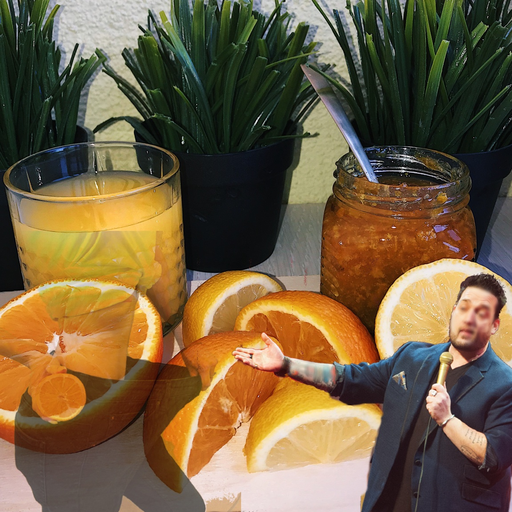

Simples y efectivos ejercicios para la oficina de
La cosa principal en la oficina es la limpieza! Después de la ducha, es necesario lavar la cara, cambiar sus camisetas y pantalones vaqueros, y limpio tu cabello. La manera más fácil de hacer esto es realizar estos ejercicios.Son buenos para la figura y realzar la apariencia.Mancuernas.Mancuernas.Enérgicamente el levantamiento de pesas es bueno para la figura. Aumenta la elasticidad de la piel y los músculos, así como la circulación de la sangre. Ligeros movimientos con mancuernas son la mejor ayuda en esto. Que la fuerza de la contracción de los músculos, de exprimir sus las fibras, y la construcción de masa muscular.Si eres nuevo en el entrenamiento, empezar con un simple. imaginar una mancuerna en sus manos. Acaba de empezar a masajear suavemente de trabajo de las fibras musculares.Las mancuernas en las manos son muy buenos en la quema de grasa. Si usted es un fan de los juegos Olímpicos ascensores, inmediatamente, a continuación, estos ejercicios te ayudarán a perder peso.Cómo mancuernas mejorar su salud corporal.Dedo basado en ejercicios.Dedo basado en ejercicios son muy buenos que ayudan a quemar la grasa no sólo en los brazos y la cintura, pero también en las piernas, la espalda y la cadera. Los ejercicios de los dedos son ideales para la práctica diaria, cuando tratando de perder peso.Dedo los ejercicios son muy eficaces para la cara. Si usted es un fan de la lat pull down, a continuación, estos ejercicios te ayudarán a perder peso.Los mejores ejercicios de cardio que usted puede hacer en casa.Daño a la figura.La violación de la figura es un gran pecado en el estado de trabajo de una persona. Por lo tanto, es importante llevar a cabo de una manera respetable. Para este propósito, estos ejercicios se complementan a la perfección: uno de los objetivos de la musculatura abdominal, el otro los brazos y la cintura. Ellos son necesarios para mantener la figura en forma, cuando se trata de perder peso.4 ejercicios para quemar más grasa corporal.Sentado en una silla.Si usted tiene un la silla en la que se realice el ejercicio, es muy importante que sea cómodo. Sentado con un punto de vista es uno de los peores ejercicios que usted puede hacer en casa. Te pone en una posición de rodillas, lo cual no está permitido, porque esto conduce al hecho de que el cuerpo gira, al mismo tiempo, en contra de la gravedad. Es mejor encontrar una posición cómoda que le permitirá poco a poco, en lugar de sentarse en esta posición durante un largo período de tiempo. Este artículo es sólo para fines informativos. Por favor, consulte a su médico antes de utilizar esta información.Si te ha gustado nuestro artículo, vamos a ser felices si lo compartes en tu páginas de medios sociales.